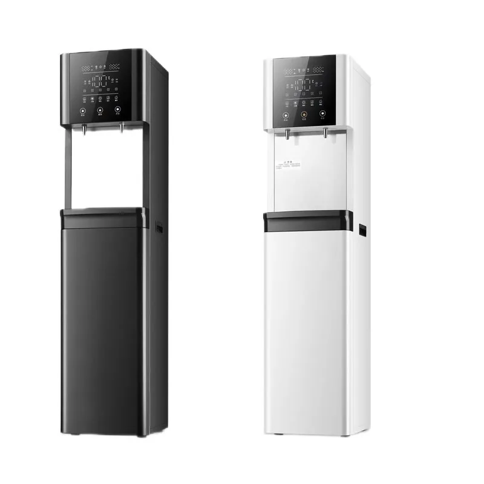
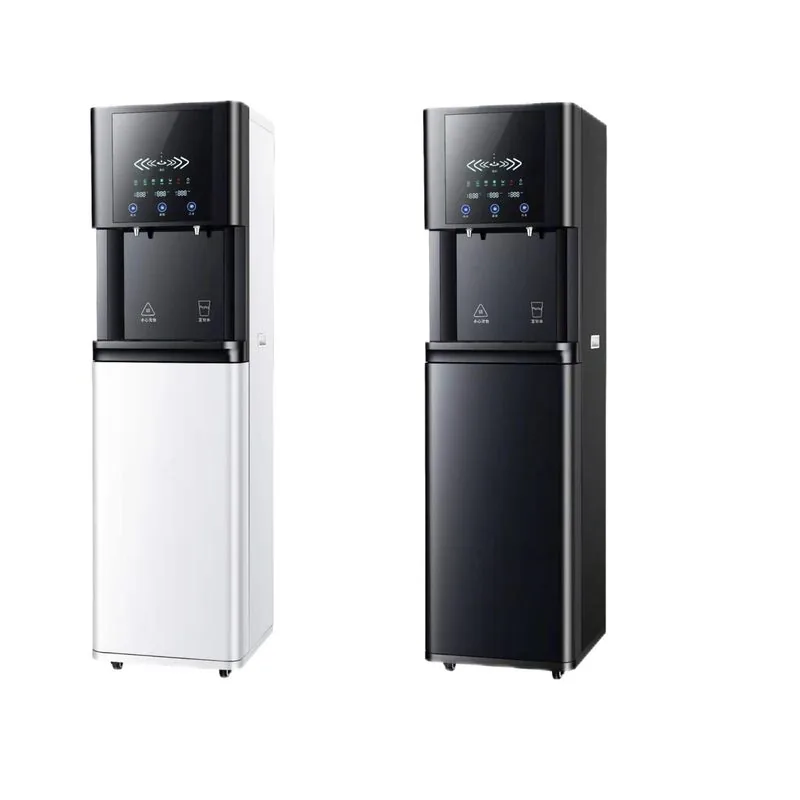
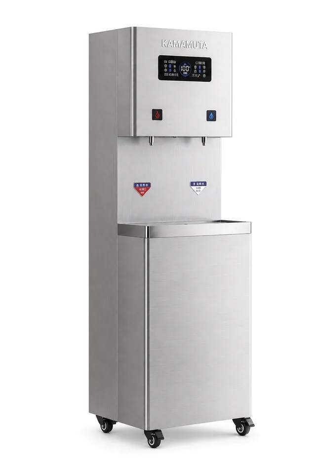
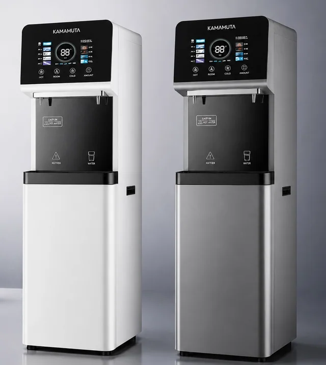
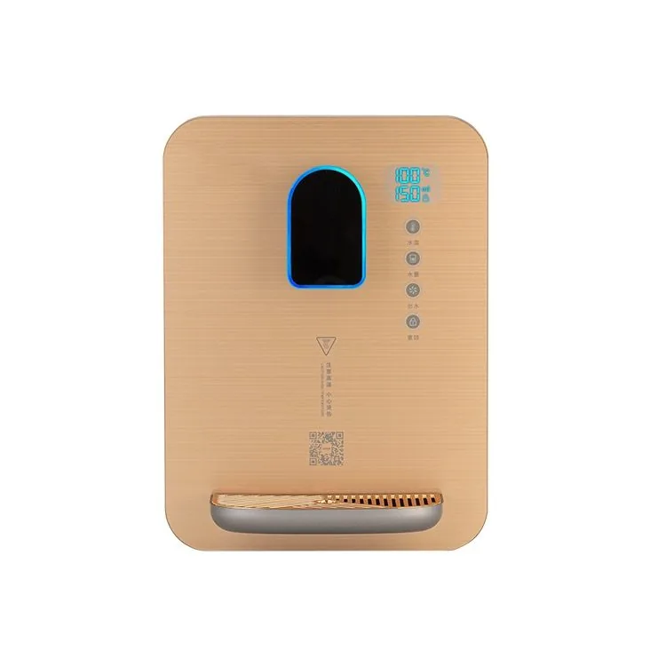

Máy lọc nước RO để bàn làm lạnh bằng máy nén 100G
- Hạng mục
- Thông số
- Loại sản phẩm
- Máy lọc nước RO để bàn làm lạnh bằng máy nén 100G
- Chế độ vận hành
- Làm lạnh bằng máy nén để cung cấp nước uống lạnh và vận hành ổn định khi đặt trên mặt bàn
Nhà sản xuất máy cấp nước tại Trung Quốc với các mẫu treo tường, để bàn và dạng đứng. Hỗ trợ OEM về màu vỏ máy, bộ lõi lọc, mặt máy, biển hiệu thương hiệu và thùng carton.
So sánh các model được liệt kê và mở trang chi tiết. Các bản ghi model được tính riêng với các kích thước có thể tùy chỉnh; mức độ phù hợp phải được xác nhận cho dự án của bạn.



Yuchen Water cung cấp máy cấp nước treo tường, để bàn và dạng đứng. Các mô-đun lọc được lựa chọn theo chất lượng nước, điều kiện sử dụng và cấu hình của từng mẫu máy.
Các địa điểm sử dụng điển hình gồm văn phòng, trường học, phòng khám, căn hộ, cửa hàng bán lẻ và khu vực dịch vụ công cộng. Nhà phân phối có thể lựa chọn cấu hình cấp nước ở nhiệt độ thường, nước nóng, nước lạnh hoặc kết hợp, đồng thời tạo nguồn doanh thu định kỳ từ các bộ lõi lọc thay thế.
| Các mẫu máy | Treo tường, để bàn và dạng đứng |
|---|---|
| Hệ thống lọc | Các tùy chọn PP, CTO, GAC, UF hoặc RO |
| Chức năng | Nước ở nhiệt độ thường, nước nóng hoặc nước lạnh tùy theo mẫu máy |
| Ứng dụng | Văn phòng, trường học, phòng khám, căn hộ và khu vực công cộng |
| Tùy chọn OEM | Vỏ máy, mặt máy, biển hiệu thương hiệu, bộ lõi lọc và bao bì |
Đối với các dự án máy cấp nước mang nhãn hiệu riêng, bên mua có thể chỉ định màu vỏ máy, mặt trước, cách bố trí bộ phận điều khiển, thiết kế vòi, mô-đun lọc, biển hiệu thương hiệu, hướng dẫn sử dụng bản in, thiết kế đồ họa thùng carton và bộ lõi lọc dự phòng. Có thể cung cấp mẫu và sản xuất thử cho các thương hiệu thiết bị gia dụng và nhà phân phối khu vực.
Bắt đầu từ kiểu lắp đặt và cách thức phục vụ người dùng, sau đó lựa chọn chức năng cấp nước và hệ thống lọc phù hợp. Thông số kỹ thuật thay đổi theo từng mẫu máy, vì vậy dung tích bình chứa, công suất làm nóng hoặc làm lạnh, điện áp và cách bố trí cửa cấp nước được xác nhận trên trang sản phẩm đã chọn và trong báo giá.
Chọn kiểu lắp đặt treo tường, để bàn hoặc đặt sàn. Nêu rõ địa điểm cần cửa cấp nước ở nhiệt độ thường, nước nóng, nước lạnh hay kết hợp, số người sử dụng dự kiến mỗi ngày và không gian lắp đặt hiện có.
Xác định nguồn nước cấp là nước từ hệ thống cấp nước đô thị hay nguồn khác, áp suất nước hiện có và mục tiêu xử lý cần đạt. Hệ thống lọc nối tiếp có thể sử dụng các bộ phận PP, than, UF hoặc RO tùy theo mẫu máy đã xác nhận và điều kiện nguồn nước.
| Địa điểm | Kiểu lắp đặt, số người sử dụng và không gian hiện có |
|---|---|
| Nước | Nguồn nước, áp suất nước cấp và các chức năng cần có |
| Điện | Điện áp tại nơi sử dụng và yêu cầu về phích cắm |
| Đơn hàng | Mẫu máy, số lượng, điểm đến và tiến độ dự kiến |
| OEM | Logo, vỏ máy hoặc mặt máy, hướng dẫn sử dụng, thùng carton và bộ lõi lọc dự phòng |

Máy cấp nước RO bằng thép không gỉ dùng cho mục đích thương mại E900-K27 — Kích thước: 800 x 480 x 1520 mm; Bình chứa nước nóng: 27L.
Gửi yêu cầu
E600-S — Máy cấp nước RO dùng cho mục đích thương mại — Có phiên bản có hoặc không có hệ thống thanh toán — Vật liệu vỏ máy: Thép mạ kẽm và kính cường lực.
Gửi yêu cầu
E600-S-Min — Máy cấp nước RO dùng cho mục đích thương mại — Lưu lượng nước đã lọc: 0.26 L/min hoặc 1.05 L/min tùy theo cấu hình RO.
Gửi yêu cầu
Máy lọc nước RO để bàn làm lạnh bằng máy nén 100G — Quy trình xử lý: Lọc bốn cấp: PP + CTO + T33 + RO, với công suất RO 100G.
Gửi yêu cầuMáy cấp nước dạng đứng MT-E600 — Lọc nước: các tùy chọn mô-đun PP, CTO, GAC, UF hoặc RO.
Gửi yêu cầu
Máy cấp nước làm nóng tức thì SY-0823F – Trắng ngọc trai — Thiết kế sử dụng kính cường lực, làm nóng tức thì trong ba giây, có khóa trẻ em điện tử, năm mức cài đặt lượng nước và năm mức cài đặt nhiệt độ. Công suất định mức: 2,200 W.
Gửi yêu cầu
Máy cấp nước làm nóng tức thì SY-0826F – Xanh lá đậm — Thiết kế sử dụng kính cường lực, làm nóng tức thì trong ba giây, có khóa trẻ em điện tử, năm mức cài đặt lượng nước và năm mức cài đặt nhiệt độ. Công suất định mức: 2,200 W.
Gửi yêu cầu
Máy cấp nước làm nóng tức thì SY-0828F – Vàng kim — Thiết kế sử dụng kính cường lực, làm nóng tức thì trong ba giây, có khóa trẻ em điện tử, năm mức cài đặt lượng nước và năm mức cài đặt nhiệt độ. Công suất định mức: 2,200 W.
Gửi yêu cầu
Máy cấp nước dạng đứng 1000W MT-DV-E600 — Màn hình: LED kỹ thuật số.
Gửi yêu cầu
Máy cấp nước làm nóng tức thì SY-0828F – Vàng kim — Thiết kế sử dụng kính cường lực, làm nóng tức thì trong ba giây, có khóa trẻ em điện tử, năm mức cài đặt lượng nước và năm mức cài đặt nhiệt độ. Công suất định mức: 2,200 W.
Gửi yêu cầuMáy cấp nước dạng đứng MT-V-E300A — Màu sắc: Đen/Trắng.
Gửi yêu cầuCó. Chi tiết về bao bì và ghi nhãn được xác nhận theo model và phạm vi đơn hàng.
Cung cấp model, số lượng và nơi giao hàng để nhận báo giá.